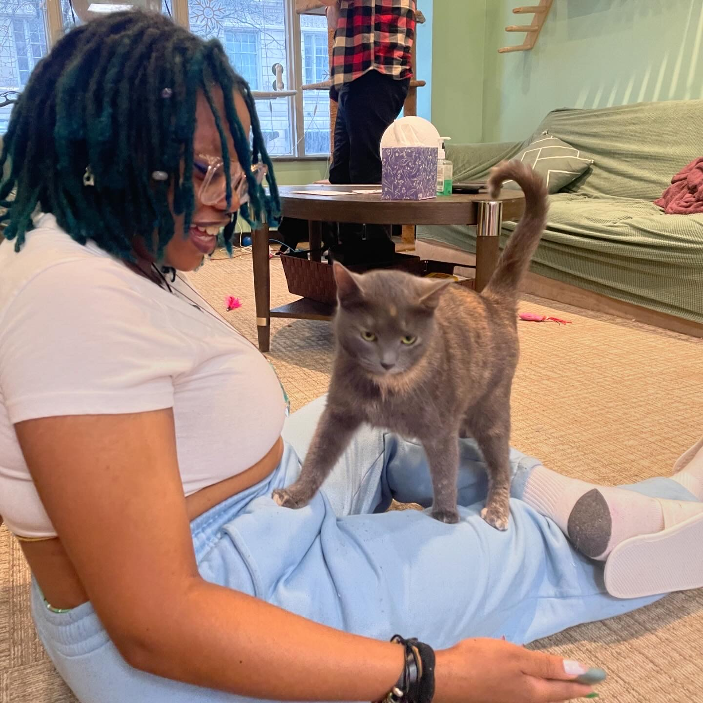

Hiiii!
I attend the Rochester Institute of Technology. I study Human Centered Computing with two concentrations in Data Analysis and Front End Development.
I also have a immersion in AI Ethics and a minor in Geographic Information Systems.
I was born and raised in Birmingham, AL. I currently spend most of my time in Rochester, NY.
I currently work as a Residential Advisor and Teaching Assistant.
I have experience working in areas like Digital Acessibility, Bias Research, and Spatial Mapping.
I am looking for an summer internship between May 2026 - Auguest 2026.